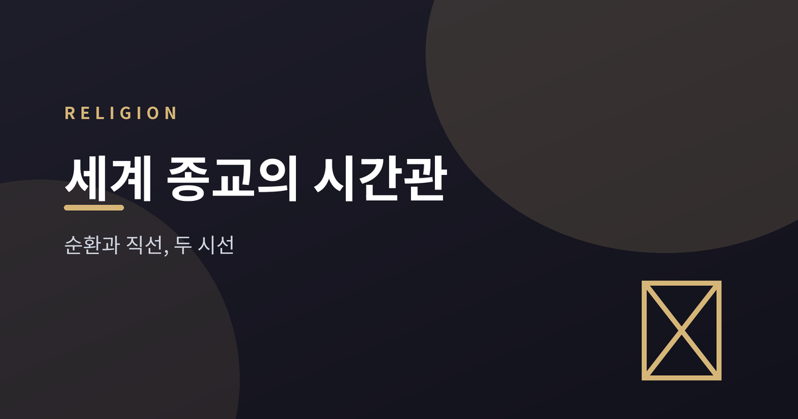
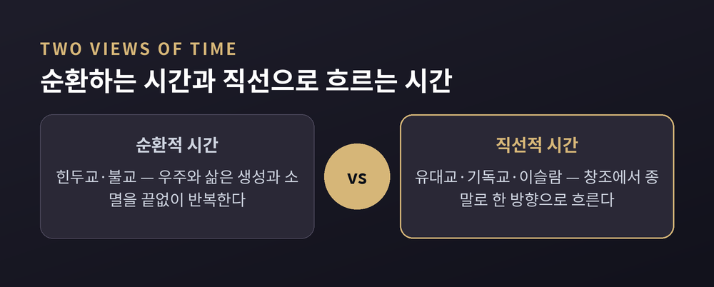
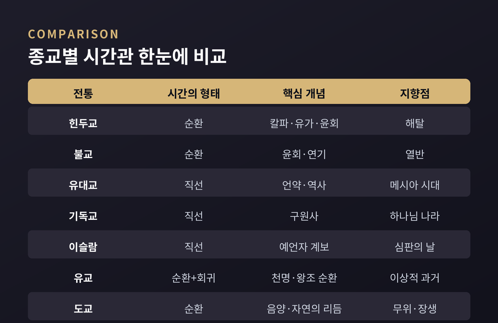
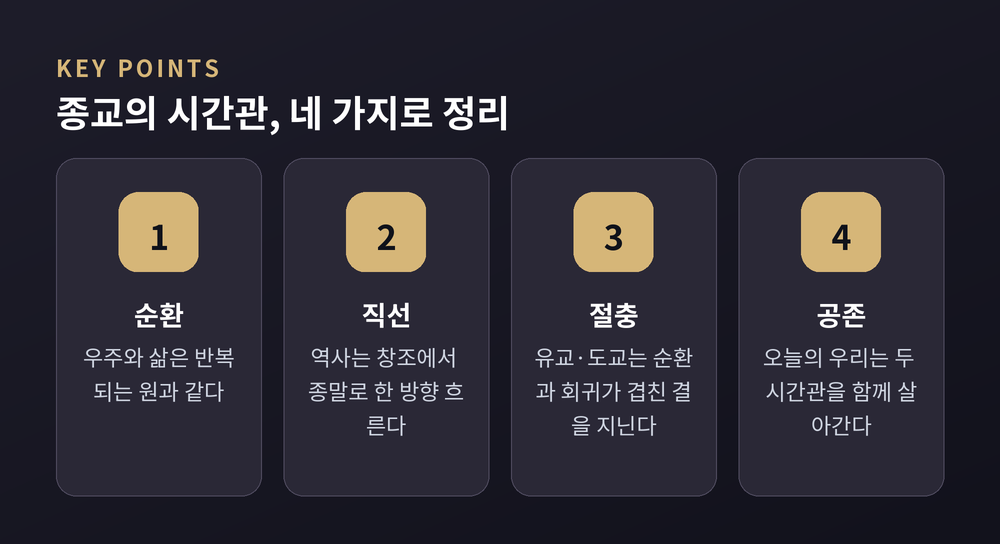

[종교] 세계 종교의 시간관 — 순환과 직선, 세계를 보는 두 시선

시간은 흘러가는 것일까요, 아니면 돌고 도는 것일까요. 이번 글에서는 종교의 시간관을 두 갈래로 나누어 정리해 보겠습니다.
- 힌두교·불교는 우주와 삶이 반복된다고 보는 순환적 시간관을 취합니다.
- 유대교·기독교·이슬람은 창조에서 종말로 나아가는 직선적 시간관을 취합니다.
- 유교·도교는 두 관점 사이 어딘가에 자리한, 독자적인 시간 감각을 지닙니다.
특정 종교의 우열을 가리려는 글이 아닙니다. "이런 관점이 있다"는 소개에 가깝다는 점을 먼저 말씀드립니다.
순환하는 우주 — 힌두교와 불교의 시간관
힌두교 우주론에서 시간은 칼파라는 거대한 주기로 흐릅니다. 하나의 칼파 안에서도 네 시대(유가)가 순서대로 지나가며, 시대가 흐를수록 질서가 조금씩 흐트러진다고 이야기됩니다.
개인의 삶으로 좁혀 보면 윤회라는 개념이 나옵니다. 존재는 업에 따라 태어나고 죽기를 되풀이하며, 이 되풀이를 벗어나는 상태를 해탈이라 부릅니다.
불교도 윤회를 전제로 삼는다는 점은 비슷합니다. 다만 영속하는 자아를 인정하지 않고, 원인과 조건이 이어지는 연기의 흐름으로 삶과 죽음의 반복을 설명한다는 점이 다릅니다. 윤회에서 벗어난 상태는 열반이라 불립니다.
두 전통 모두에서 시간은 목적지를 향해 뻗은 화살이라기보다, 계속 되돌아오는 원에 가깝습니다. 해탈이든 열반이든, 목표는 이 원을 완전히 벗어나는 데 있다는 점도 공통적입니다.

창조에서 종말까지 — 유대교·기독교·이슬람의 시간관
유대교는 창조로부터 시작해 메시아 시대를 향해 나아가는 역사로 시간을 이해하는 대표적 사례로 소개됩니다. 신과 인간 사이의 언약을 축으로, 각 사건은 반복되지 않는 일회적 사건으로 다뤄집니다.
기독교는 창조와 타락, 그리스도 사건이라는 전환점, 그리고 종말이라는 흐름으로 시간을 설명합니다. 신학에서는 이를 구원사라 부르기도 합니다. 역사는 목적을 향해 나아가는 한 방향의 흐름으로 이해됩니다.
이슬람 역시 창조에서 심판의 날로 마무리되는 직선적 역사관을 취하는 사례로 자주 언급됩니다. 예언자들의 계보를 통해 역사에 방향성과 완결성을 부여한다는 설명입니다.
세 전통 모두 절기나 예배처럼 되풀이되는 의례가 있습니다. 하지만 이는 순환 자체가 목적이 아니라, 직선적 역사 속 사건을 기억하고 되새기는 장치로 이해되는 경우가 많습니다. 같은 사건이 두 번 오지 않는다는 감각은, 지금 이 순간의 선택에 무게를 실어 주는 역할을 한다고 설명되기도 합니다.

유교와 도교, 그리고 오늘의 시간 감각
유교는 창조-종말 서사보다 역사와 사회 질서에 관심을 둡니다. 왕조의 흥망을 천명과 연결지어 순환적으로 설명하면서도, 옛 성왕의 시대를 이상으로 삼아 되돌아가려는 지향이 강하다는 평가를 받습니다. 미래를 향한 직선적 진보보다, 이상적 과거로의 회귀에 가깝다는 것입니다.
도교는 도의 끊임없는 운동과 되돌아옴을 중심 이미지로 삼습니다. 음양과 사계절의 순환이 세계관의 배경이 되며, 자연의 리듬을 거스르지 않는 태도를 이상으로 여긴다고 설명됩니다.
예전엔 시간을 오직 반복되는 자연의 리듬으로만 여겼다면, 근대 이후에는 진보라는 이름의 직선적 시간관이 세계 곳곳에 퍼졌습니다. 이 진보 사관이 유대-기독교적 목적론이 세속화된 형태라는 해석도 종종 제기됩니다.
현대인의 일상도 두 시간관이 뒤섞여 있습니다. 반복되는 달력의 요일·절기와, 성장하고 발전해야 한다는 경력·인생의 감각을 우리는 동시에 사용하고 있는 셈입니다.
최근에는 기후 위기와 지속가능성 논의 속에서 순환적 시간관이 다시 주목받기도 합니다. 자원을 순환시키고 자연의 리듬에 맞춰 살자는 문제의식이, 도교나 불교식 순환적 세계관과 은근히 맞닿아 있다는 것입니다.

정리하면 이렇습니다. 순환적 시간관은 우주와 삶을 되풀이되는 원으로 보고, 직선적 시간관은 창조에서 종말로 향하는 화살로 봅니다. 유교와 도교는 그 사이에서 자신만의 결을 지니고 있습니다.
어느 쪽이 옳다고 말할 수 있는 문제는 아닙니다. 다만 "인간이 시간에 의미를 부여하는 방식이 이렇게나 다양했다"는 사실 하나는 남습니다.
당신의 하루는 반복에 가깝습니까, 아니면 어딘가로 나아가는 중입니까. 답은 아마, 둘 다일 것입니다.